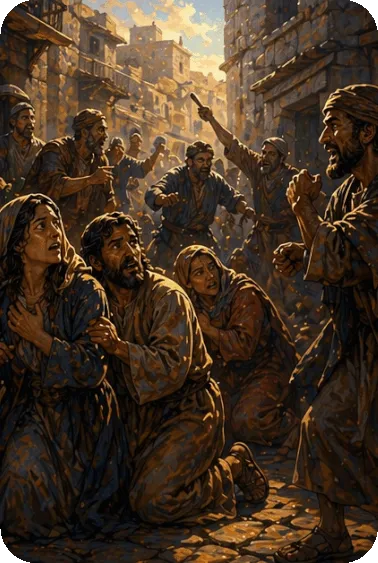

Though this time of persecution was desperate, Peter reveals that it was actually a time to rejoice. He says to count it a privilege to suffer for the sake of Christ, as their Savior suffered for them. This letter makes reference to Peter’s personal experiences with Jesus and his sermons from the book of Acts. Peter confirms Satan as the great enemy of every Christian but the assurance of Christ’s future return gives the incentive of hope. 1 Peter is a letter from Peter to the believers who had been dispersed throughout the ancient world and were under intense persecution. If anyone understood persecution, it was Peter. He was beaten, threatened, punished, and jailed for preaching the Word of God. He knew what it took to endure without bitterness, without losing hope and in great faith living an obedient, victorious life. This knowledge of living hope in Jesus was the message, and Christ’s example was the one to follow.
The assurance of eternal life is given to all Christians. One way to identify with Christ is to share in His suffering. To us that would be to endure insults and slurs from those who call us "goodie two shoes" or " holier than thou." This is so minor compared to what Christ suffered for us on the Cross. Stand up for what you know and believe is right and rejoice when the world and Satan aim to hurt you.
Peter’s familiarity with the Old Testament law and prophets enabled him to explain various Old Testament passages in light of the life and work of the Messiah, Jesus Christ. In 1st Peter 1 : 16, he quotes Leviticus 11 : 44: “Be holy, for I am holy.” But he prefaces it by explaining that holiness is not achieved by keeping the law, but by the grace bestowed upon all who believe in Christ (v. 13).
Further, Peter explains the reference to the “cornerstone” in Isaiah 28 : 16 and Psalm 118 : 22 as Christ, who was rejected by the Jews through their disobedience and unbelief. Additional Old Testament references include the sinless Christ (1st Peter 2 : 22 / Isaiah 53 : 9) and admonitions to holy living through the power of God which yields blessings (1st Peter 3 : 10 – 12; Psalm 34 : 12 – 16; 1st Peter 5 : 5; Proverbs 3 : 34).
Summary of the Book of 1st Peter from GotQuestions.org — is a popular Christian website and "parachurch" ministry that provides answers to a vast array of questions about the Bible, theology, and spiritual life.
Do you have a question? Submit your Bible Questions to GotQuestions.org No need to sign up, just use your email to receive notifications from any answers. Also browse their website for many questions that may answer your questions.
For personal questions, always pray first to God and seek answers through deep prayers. That may answer deep questions in your heart, and mind, as only God, Holy Spirit and Jesus can see through and through on your feelings, thoughts and situation, better than any man can.